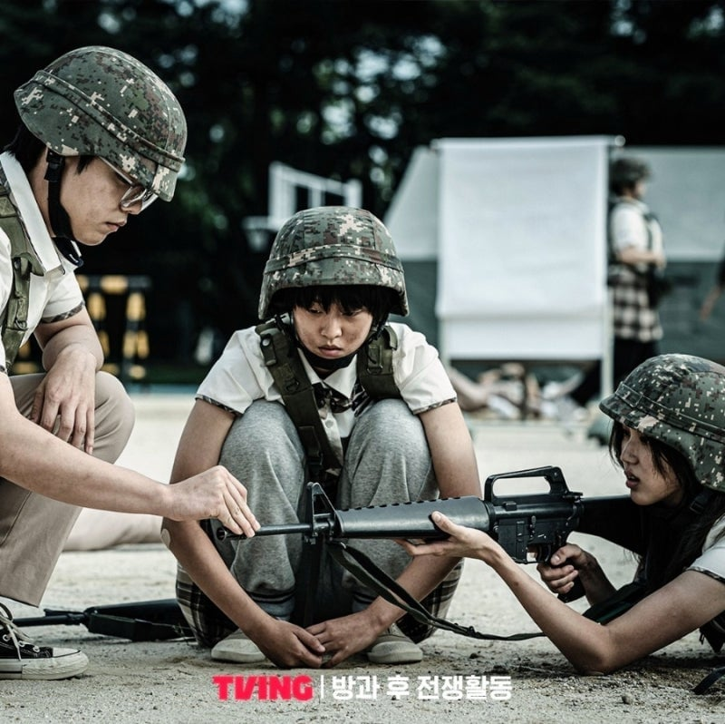
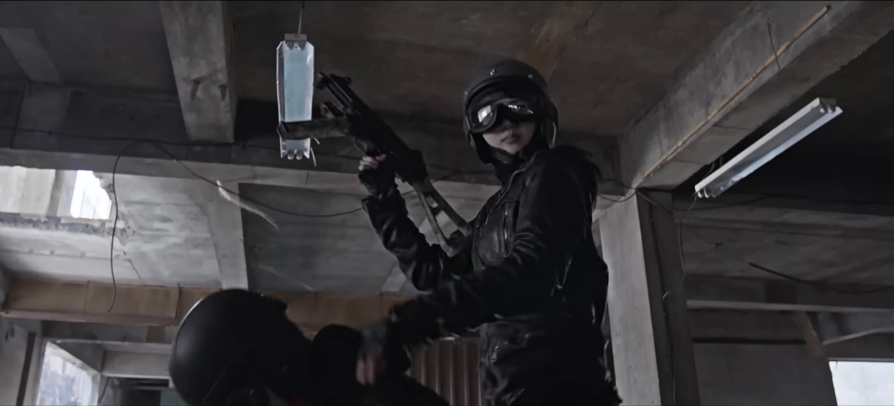
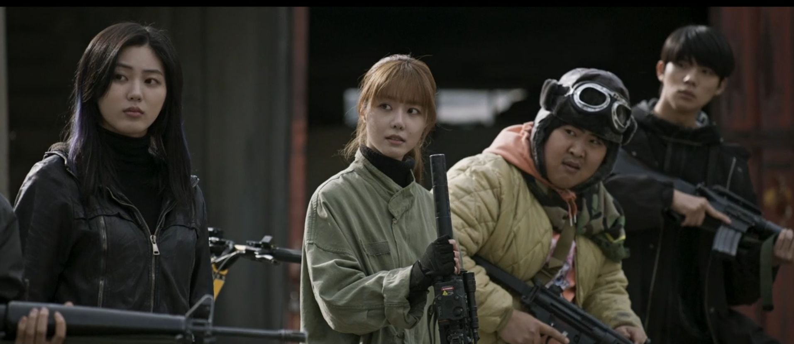
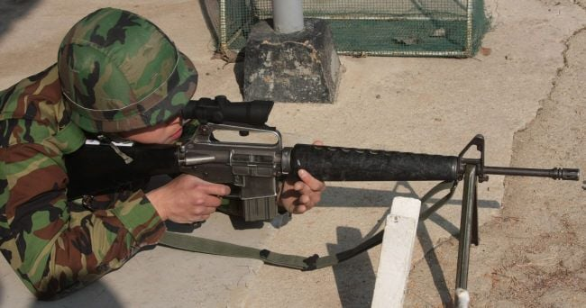
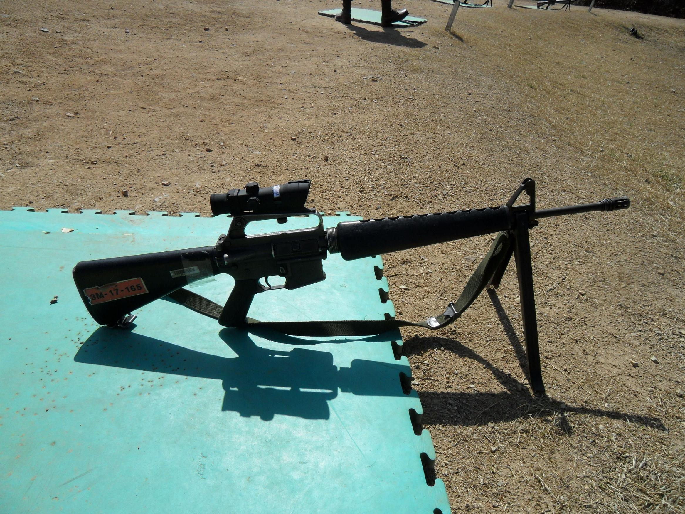
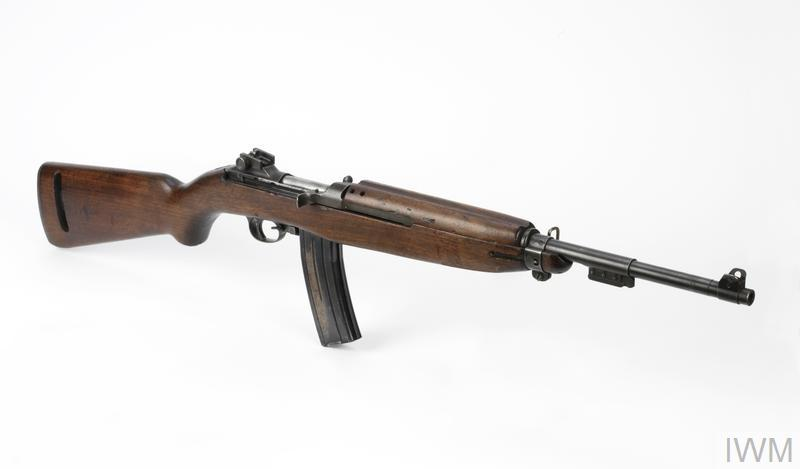

분명 파트 1에선 M16A1을 지급 받았는데...
파트 2 부터는 M110 SASS를 쓰질 않나...

UMP45도 등장하고..

심지어 MP5K 기관단총도 나오는 등...
경찰특공대나 특전사 부대를 턴게 아닌 이상 존재 할수 없는 무기가 등장함 ㅅㅂㅋㅋㅋㅋㅋㅋㅋ


차리리 경찰특공대 대신 예비군 부대 화기고를 털어서 M16A1 + 트라이락스 조준경을 가져가거나

창고에 짱박혀 있는 M2 카빈을 가져가는게 더 현실성 있음 ㅅㅂㅋㅋㅋㅋㅋㅋㅋ
같이보기: https://www.dogdrip.net/729967109 (대한민국 육군과 육자대 병과 명칭의 차이)
https://www.dogdrip.net/730007771 (일본 해군에 사관학교 명칭이 없었던 이유)
원작을 철저하게 훼손시켜놓네 ㅋㅋ